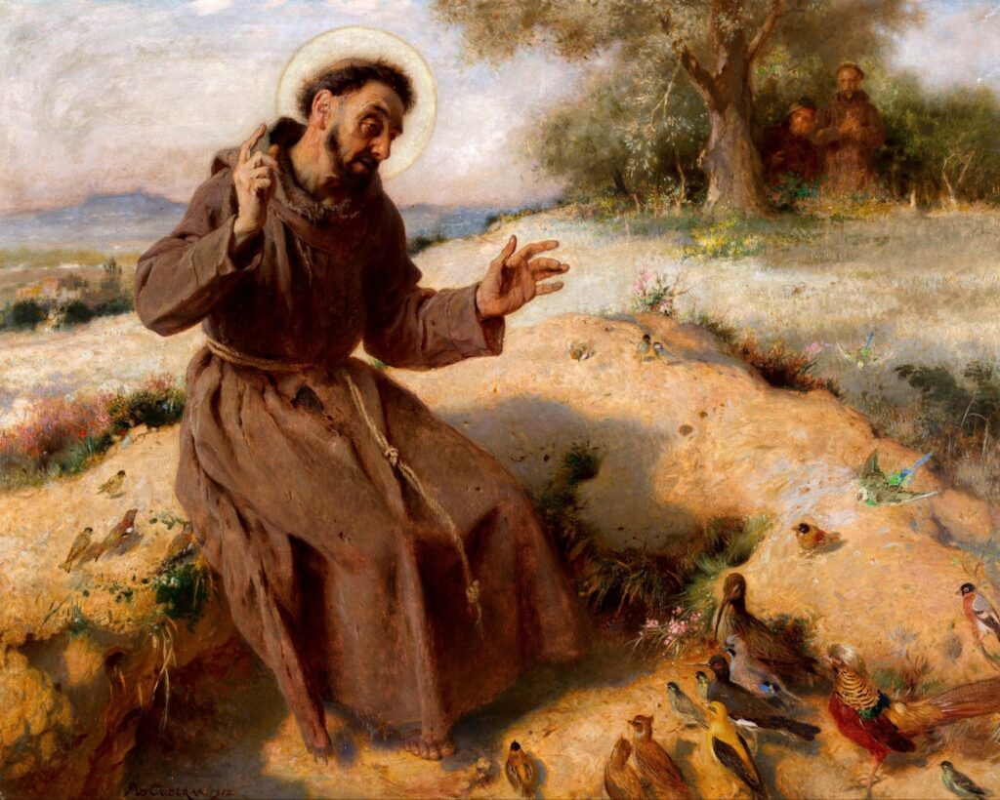

En un día radiante de primavera, San Francisco de Asís caminaba por los campos cercanos a Asís. Su corazón estaba lleno de gratitud y reverencia por la creación de Dios, y su espíritu parecía elevarse con cada paso que daba. Se detuvo junto a una pequeña colina cubierta de flores silvestres de todos los colores imaginables, y su mirada se posó en una mariposa que revoloteaba alegremente de flor en flor.
Intrigado por la gracia y belleza del pequeño insecto, Francisco comenzó a hablarle como si fuera un amigo cercano. "Hermana Mariposa", dijo con dulzura, "tú también eres una de las obras maestras del Creador. Con tu vuelo ligero y tus colores deslumbrantes, nos recuerdas la infinita imaginación de Dios".
Mientras Francisco hablaba, la mariposa pareció responder en un ballet delicado, como si estuviera bailando al ritmo de sus palabras. La brisa suave acariciaba su rostro y el canto de los pájaros se mezclaba con sus palabras, creando una sinfonía natural que solo podía describirse como divina.
Entonces, con un gesto sorprendente, la mariposa se posó en el hombro de Francisco, como si quisiera estar aún más cerca de aquel hombre cuyo corazón irradiaba amor y respeto por toda la creación. Francisco sonrió y continuó compartiendo sus pensamientos y sentimientos con su nueva amiga, como si estuviera hablando con un mensajero celestial.
La gente que pasaba por el camino observaba asombrada la escena: el santo humilde y la mariposa en un momento de comunión silenciosa. Aquellos que eran testigos de esta escena entendieron que la esencia misma de la santidad de Francisco radicaba en su capacidad de encontrar a Dios en cada rincón de la creación.